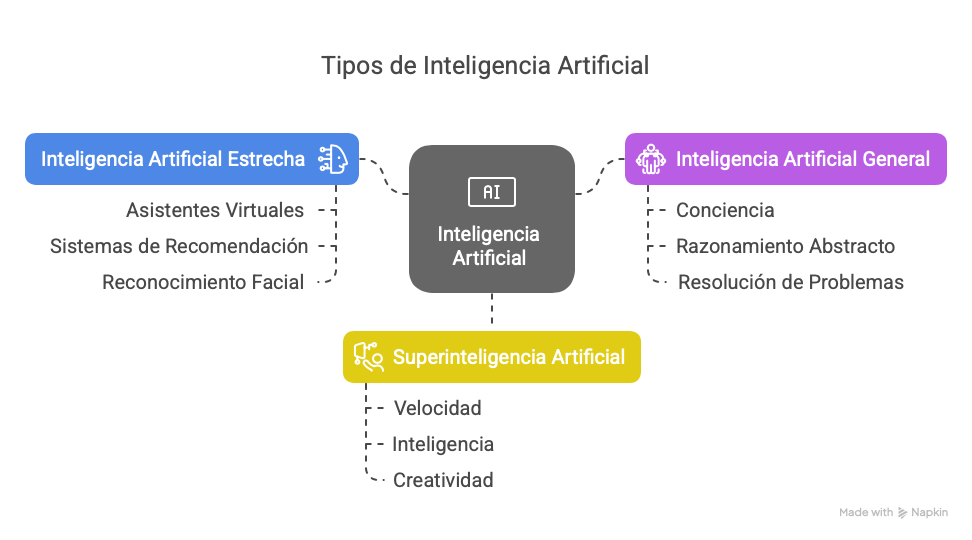
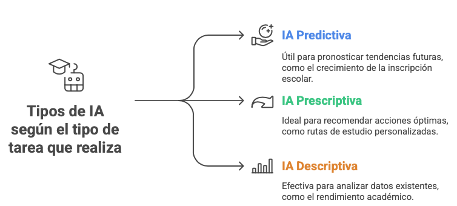
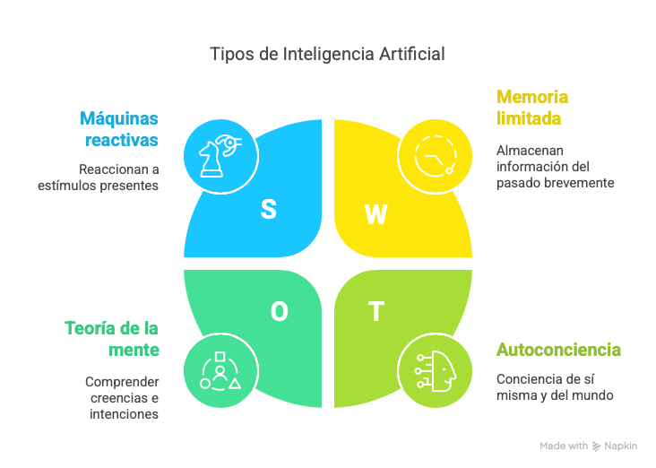

3.1. Los tipos de inteligencia artificial.
La inteligencia artificial se puede clasificar de diversas maneras atendiendo a diferentes criterios. Una de las clasificaciones más comunes se basa en sus capacidades y funcionalidades, dividiéndola principalmente en tres tipos:

-Inteligencia artificial estrecha (ANI) o débil: Este es el tipo de IA que existe actualmente y que está diseñada y entrenada para realizar una tarea específica. Son sistemas expertos en un dominio particular y no poseen conciencia, autoconciencia ni la capacidad de realizar tareas fuera de su campo de especialización. La mayoría de las aplicaciones de IA que utilizamos en la vida cotidiana entran en esta categoría, como asistentes virtuales (Siri, Alexa), sistemas de recomendación (Netflix, Spotify), reconocimiento facial, filtros de spam y vehículos autónomos (en tareas específicas como el mantenimiento de carril).
-Inteligencia artificial general (AGI) o fuerte: Este tipo de IA, aún en fase de investigación y desarrollo, se refiere a sistemas con la capacidad intelectual de un ser humano. Una AGI sería capaz de comprender, aprender y aplicar conocimientos en diversos dominios, realizando cualquier tarea intelectual que un humano puede llevar a cabo. Implicaría tener conciencia, capacidad de razonamiento abstracto, resolución de problemas complejos y aprendizaje autónomo en una amplia gama de contextos. Actualmente, no existen ejemplos concretos de AGI y su desarrollo sigue siendo un objetivo a largo plazo.
-Superinteligencia artificial (ASI): Este es un nivel hipotético de inteligencia artificial que superaría las capacidades cognitivas de los seres humanos en todos los aspectos. Una ASI no solo podría realizar las mismas tareas que un humano, sino que también sería mucho más rápida, inteligente y creativa. Este concepto plantea importantes interrogantes éticos y filosóficos y se considera un futuro lejano y especulativo.
Además, la IA se puede categorizar según el tipo de resultado o tarea que realiza:

-Predictiva: hace pronósticos sobre sucesos futuros. Por ejemplo, predecir el número de líneas que tendrá un colegio en unos años.-Prescriptiva: recomienda acciones óptimas en una situación determinada. Por ejemplo, diseñar una ruta de estudio personalizada para un estudiante según sus debilidades detectadas..
-Descriptiva: identifica y describe patrones en los datos. Por ejemplo, el análisis del rendimiento académico de un grupo o de un estudiante.
Otra clasificación, propuesta por Arend Hintze, se centra en la similitud con la inteligencia humana y distingue cuatro tipos:

-Máquinas reactivas: Son el tipo más básico de IA. No tienen memoria del pasado y simplemente reaccionan a los estímulos presentes. Un ejemplo clásico es Deep Blue, la computadora que venció a Gary Kasparov en ajedrez.
-Memoria limitada: Estas máquinas pueden almacenar información del pasado durante un período limitado, lo que les permite aprender de los datos y mejorar sus decisiones con base en la experiencia. Los sistemas de reconocimiento de voz y los vehículos autónomos que consideran el historial reciente del tráfico entran en esta categoría.
-Teoría de la mente: Este tipo de IA, aún en desarrollo, tendría la capacidad de comprender que otros agentes (humanos, máquinas, etc.) tienen creencias, deseos e intenciones que afectan su comportamiento. Esto es crucial para la interacción social compleja.
-Autoconciencia: Este es el nivel más avanzado y actualmente hipotético. Una IA autoconsciente tendría conciencia de sí misma, de sus propios estados internos y del mundo que la rodea, similar a la conciencia humana.
Es importante tener en cuenta que la mayoría de los sistemas de IA actuales se engloban dentro de la categoría de Inteligencia artificial estrecha. La investigación avanza constantemente, pero alcanzar la Inteligencia artificial general y la superinteligencia artificial sigue siendo un desafío complejo y un área activa de exploración.
Para ampliar...
 La inteligencia artificial y su tipología es un tema realmente interesante, sin duda alguna. Si deseas profundizar un poco más, te invito a visitar esta web en la que también se habla de este tema.
La inteligencia artificial y su tipología es un tema realmente interesante, sin duda alguna. Si deseas profundizar un poco más, te invito a visitar esta web en la que también se habla de este tema.